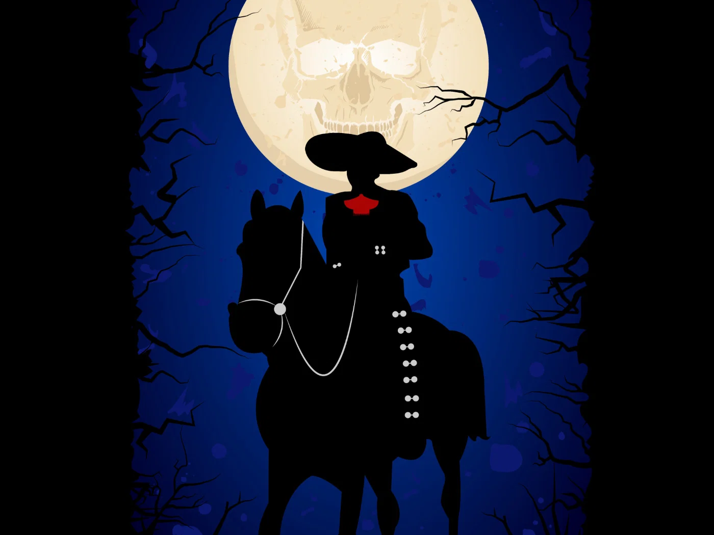
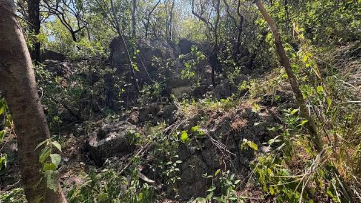

No se encontraron mitos o leyendas que coincidan con tu búsqueda.

La Llorona en el Río Tula
Pobladores cercanos a las riberas del río aseguran escuchar lamentos desgarradores durante las noches de luna llena.

El Charro Negro del Cerro
La conocida historia del hombre elegante a caballo que ronda los senderos del cerro buscando viajeros solitarios.

Los Túneles Ocultos
Mitos urbanos sobre pasadizos subterráneos ocultos en las barrancas que conectan antiguos puntos del municipio.